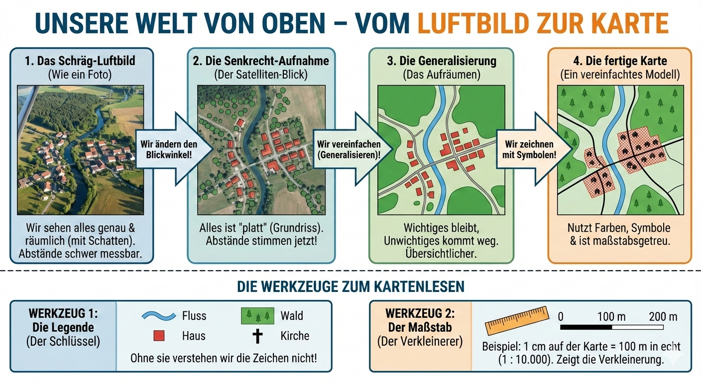

Du lernst, wie aus einem echten Blick von oben eine vereinfachte Karte mit
Legende, Nordpfeil und Maßstab wird.
Inhalte für Klasse 5: Was du sicher können sollst
Dieses Thema gehört zu den Grundbausteinen im Erdkundeunterricht.
Ziel ist, dass du dich mit Karten orientieren kannst und verstehst,
wie aus der Wirklichkeit eine Karte entsteht.
Luftbild und Karte vergleichen: echt, vereinfacht, symbolisch.
Legende lesen und Symbole richtig zuordnen.
Mit Nordpfeil und Himmelsrichtungen Wege beschreiben.
Maßstab auf Karten verstehen (z. B. 1:10.000).
Einfache Lagebeziehungen in Stadtplan und Atlas erkennen.
Luftbild
Ein Luftbild ist ein Foto von oben. Man erkennt viele Details
wie Dachformen, Schatten, Bäume und Fahrzeuge. Das ist realistisch,
aber oft unübersichtlich.
Karte
Eine Karte wählt nur wichtige Informationen aus. Farben und Symbole
ersetzen Details. Dadurch kann man Orte und Wege schneller erfassen.
Legende
Die Legende erklärt alle Zeichen. Ohne Legende kannst du viele
Kartensymbole nicht sicher deuten. Sie ist das "Wörterbuch" der Karte.
Nordpfeil
Der Nordpfeil zeigt, wo Norden liegt. Von dort leitest du Osten, Süden
und Westen ab. So kannst du Richtungen eindeutig beschreiben.
Maßstab
Der Maßstab zeigt, wie stark die Wirklichkeit verkleinert wurde.
Beispiel 1:10.000 bedeutet: 1 cm Karte sind 10.000 cm echt.
Lagebeziehungen
Du beschreibst, wo etwas liegt: nördlich, südlich, links/rechts,
nahe/weit entfernt. Das hilft beim Vergleichen von Orten.
Übersichtsgrafik: Vom Luftbild zur Karte
Diese Grafik zeigt den kompletten Ablauf vom Luftbild bis zur fertigen Karte
mit den Werkzeugen Legende und Maßstab.

Ablauf: Blickwinkel ändern, vereinfachen, mit Symbolen arbeiten und
Karte mit Legende sowie Maßstab lesbar machen.
Interaktiv: 3 Schritte vom Luftbild zur Karte
Wechsle zwischen den Stufen und beobachte, wie Details reduziert
und durch Zeichen ersetzt werden.
Schritt für Schritt: So wird kartiert
Beobachten: Im Luftbild alle Elemente erkennen
(z. B. Straßen, Gebäude, Grünflächen, Gewässer).
Auswählen: Nur wichtige Informationen behalten,
Nebendetails weglassen.